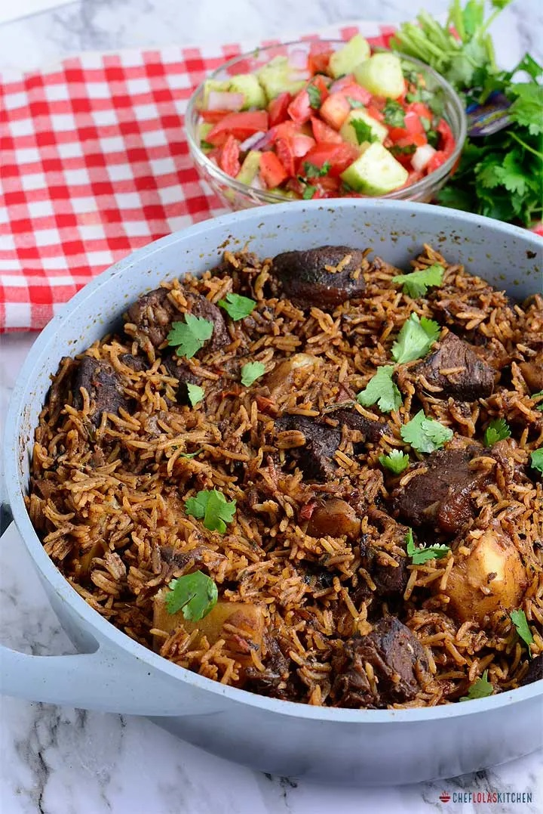

How to cook the best pilau

Pilau description
Pilau has a wonderful balance of flavors. It is a festive
dish, which is never missing during special occasions or events. It’s made
with rice cooked in a well-seasoned broth of Meat or chicken. Unlike the
Indian pilau, the East African version does not use curry and it’s less
spicy.
Rice is, without a doubt, one of my favorite food in the
world. Not only is it my to-go dish when I need to prepare a quick meal,
but it can easily be turned into an elegant dish for special occasions.
Ingredients
The following items are needed to cook pilau:
- Pilau masala
- Onions
- Garlic, ginger and serrano powder
- Cilantro
- Bay leaves
- Beef cubes
- Meat
- Tomatoes
Pilau cooking instructions
-
Toast and blend the pilau masala, in a medium saucepan over
medium heat.
-
Brown the onions by frying it in oil until it caramelizes. This
should take about 10 to 15 minutes. Stir in the Garlic,
ginger and serrano pepper.
-
Add the meat stock cubes, pilau masala, cilantro, bay leaves, and salt
to taste and brown the meat for about 10 minutes.
-
Stir in the tomatoes and cook till it dissolves. Then stir in
the potatoes.
-
Add water and bring everything to a
rolling boil and leave the potatoes to cook
for about 10 minutes.
-
Stir in the rice then cover tightly. You can
use an aluminum foil to cover it first, this will help keep the steam
in. Then place the lid over it and leave to cook on a low heat for 20
minutes until the liquid has been absorbed.
-
Serve hot! You can sprinkle the rice pilaf
with some chopped cilantro, then fluff with a fork. Enjoy.